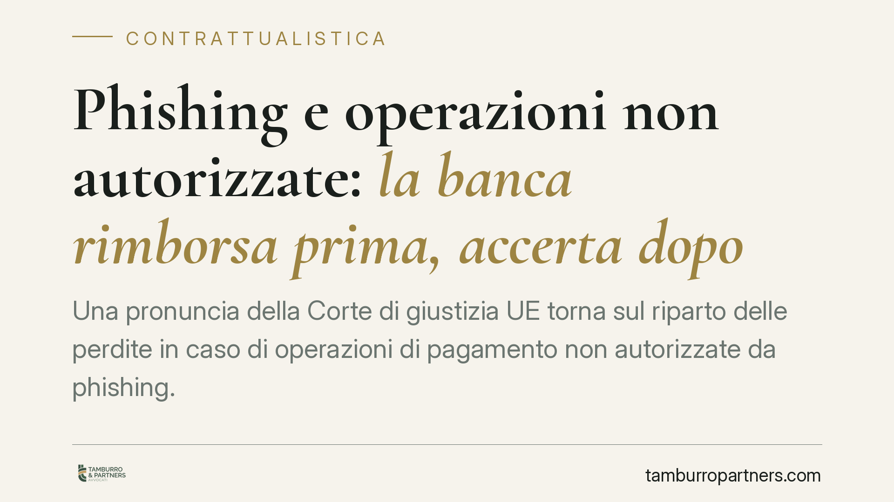

Phishing e operazioni non autorizzate: la banca rimborsa prima, accerta dopo
Una pronuncia della Corte di giustizia UE torna sul riparto delle perdite in caso di operazioni di pagamento non autorizzate da phishing. Il principio è netto: la banca rimborsa in tempi stretti, e solo in un secondo momento può recuperare l'importo dimostrando dolo o colpa grave del cliente. Un'inversione logica che sposta sull'intermediario l'onere di provare la responsabilità del correntista.

Il principio: prima il rimborso, poi l'accertamento
La questione ruota attorno a un meccanismo spesso frainteso. Quando il cliente segnala un'operazione di pagamento che non ha autorizzato, la regola europea non consente alla banca di trattenere il rimborso in attesa di indagini sulla condotta del correntista. Il flusso è invertito: prima si restituisce la somma, poi — eventualmente — si accerta la responsabilità e si recupera l'importo.
Questo impianto ha una ragione precisa. La vittima di una frode informatica non deve restare priva delle proprie disponibilità mentre si discute di chi abbia sbagliato. Il rischio di contestazione grava sull'intermediario, che dispone degli strumenti tecnici per ricostruire l'operazione.
Inquadramento normativo
Il riferimento è la Direttiva (UE) 2015/2366 (c.d. PSD2), recepita in Italia attraverso le modifiche al D.lgs. 27 gennaio 2010, n. 11 introdotte dal D.lgs. 15 dicembre 2017, n. 218.
La disciplina si articola su più disposizioni che conviene tenere distinte:
- Art. 69 PSD2 — obblighi dell'utente, tra cui comunicare senza indugio al prestatore di servizi di pagamento l'operazione non autorizzata o erroneamente eseguita, non appena ne abbia contezza.
- Art. 72 PSD2 — onere della prova: spetta al prestatore dimostrare che l'operazione è stata autenticata, correttamente registrata e non inficiata da guasti tecnici. L'uso dello strumento di pagamento registrato dal sistema non basta, da solo, a provare che l'operazione sia stata autorizzata o che il cliente abbia agito con frode o negligenza grave.
- Art. 73 PSD2 — rimborso delle operazioni non autorizzate: il prestatore deve restituire l'importo *entro la fine della giornata operativa successiva* a quella in cui ha preso atto della contestazione, salvo che abbia fondati motivi di sospettare una frode e li comunichi per iscritto all'autorità competente.
- Art. 74 PSD2 — ripartizione delle perdite: il pagatore può sopportare una franchigia fino a 50 euro per operazioni derivanti da strumento smarrito, sottratto o utilizzato indebitamente; sopporta invece l'intera perdita quando ha agito con dolo o colpa grave.
La pronuncia della Corte di giustizia dell'Unione europea richiamata nella fonte si inserisce in questo quadro confermando che l'obbligo di rimborso rapido opera anche a fronte di una condotta negligente del cliente: la negligenza grave rileva nel riparto finale delle perdite, non come causa di sospensione del rimborso iniziale. *(Nota: gli estremi identificativi della sentenza indicati dalla fonte non risultano al momento verificabili e vanno confermati sul testo ufficiale.)*
Cosa cambia per il cliente e per l'intermediario
Per il correntista il messaggio è chiaro: la contestazione tempestiva attiva un diritto al rimborso dalla tempistica stringente. La banca non può opporre genericamente la "disattenzione" del cliente per ritardare la restituzione.
Per l'intermediario l'onere è duplice. Da un lato deve rimborsare entro i termini di legge. Dall'altro, se intende recuperare l'importo, deve provare in concreto il dolo o la colpa grave — ad esempio la comunicazione consapevole delle credenziali di autenticazione forte a soggetti terzi. La prova non si esaurisce nella registrazione tecnica dell'operazione.
Rilettura delle clausole di conto
Molti contratti di conto corrente e di home banking contengono clausole che addossano al cliente le conseguenze di qualsiasi operazione eseguita con le sue credenziali. Queste pattuizioni vanno lette alla luce dell'art. 72 PSD2: non possono rovesciare sul correntista l'onere della prova che la legge pone a carico del prestatore. Una clausola che presuma automaticamente l'autorizzazione dall'uso dello strumento è, su questo punto, cedevole rispetto alla disciplina imperativa.
Cosa fare in concreto
- Segnala subito. Comunica l'operazione non autorizzata alla banca appena te ne accorgi, con mezzo tracciabile (PEC, modulo ufficiale), e conserva la ricevuta.
- Documenta la frode. Salva mail, SMS e pagine del falso sito utilizzati per il phishing: servono a ricostruire la dinamica.
- Richiama la tempistica di legge. Nella contestazione cita espressamente l'obbligo di rimborso entro la fine della giornata operativa successiva previsto dall'art. 73 PSD2.
- Non accettare addebiti automatici. Se la banca invoca la colpa grave, chiedi per iscritto quali elementi concreti la provino: l'onere è suo.
- Valuta un reclamo e l'Arbitro Bancario Finanziario in caso di diniego o ritardo, prima di adire l'autorità giudiziaria.
Consigliamo di muoversi con rapidità: il rispetto dei termini di segnalazione è il presupposto per far valere il diritto al rimborso.
Disclaimer
Contributo informativo a cura di Tamburro & Partners - Avv. Giuseppe Tamburro. Non costituisce parere legale.
Ogni contratto ha il suo equilibrio.
Se vuoi una revisione delle clausole o una redazione su misura, scrivi allo studio. Ti rispondiamo entro un giorno lavorativo.